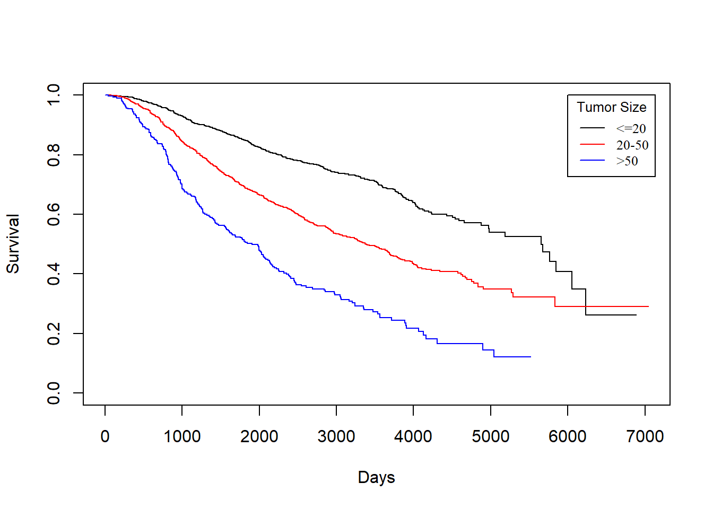

Rotterdam
2021-03-04
Chapter1 Motivation
1.1 Prepare packages
1.2 Loading data
data(rotterdam)| Variable name | Description |
|---|---|
pid |
patient identifier |
year |
year of cancer incidence |
age |
age |
meno |
menopausal status (0= premenopausal, 1= postmenopausal) |
size |
tumor size, a factor with levels <=20, 20-50, >50 |
grade |
tumor grade |
nodes |
number of positive lymph nodes |
pgr |
progesterone receptors (fmol/l) |
er |
estrogen receptors (fmol/l) |
hormon |
hormonal treatment (0=no, 1=yes) |
chemo |
chemotherapy |
rtime |
days to recurrence or last follow-up |
recur |
0= no recurrence, 1= recurrence |
dtime |
days to death or last follow-up |
death |
0= alive, 1= dead |
1.3 Motivation/ Research Question
Explore what effects the survival of Breast Cancer patients and what might be a reasonable prediction model for the survival of patients.
1.4 Kaplan-Miere
KM_None_Death <- survfit(Surv(dtime, death) ~ 1, data = rotterdam)
KM_None_Death## Call: survfit(formula = Surv(dtime, death) ~ 1, data = rotterdam)
##
## n events median 0.95LCL 0.95UCL
## 2982 1272 4033 3888 4309plot(KM_None_Death, conf.type = "plain", col = "blue", xlab="Days", ylab="Survival")
KM_None_Recur <- survfit(Surv(rtime, recur) ~ 1, data = rotterdam)
KM_None_Recur## Call: survfit(formula = Surv(rtime, recur) ~ 1, data = rotterdam)
##
## n events median 0.95LCL 0.95UCL
## 2982 1518 2983 2719 3193plot(KM_None_Recur, conf.type = "plain", col = "red", xlab="Days", ylab="Survival")
rotterdam <- rotterdam %>%
mutate(Treatment = ifelse(chemo == 1 & hormon == 0, "Chemo", ifelse(chemo == 0 & hormon == 1, "Hormon", ifelse(chemo == 1 & hormon == 1, "Both", "NaN/Other Treatment"))))
head(rotterdam)## pid year age meno size grade nodes pgr er hormon chemo rtime recur dtime
## 1 1 1992 74 1 <=20 3 0 35 291 0 0 1799 0 1799
## 2 2 1984 79 1 20-50 3 0 36 611 0 0 2828 0 2828
## 3 3 1983 44 0 <=20 2 0 138 0 0 0 6012 0 6012
## 4 4 1985 70 1 20-50 3 0 0 12 0 0 2624 0 2624
## 5 5 1983 75 1 <=20 3 0 260 409 0 0 4915 0 4915
## 6 6 1983 52 0 <=20 3 0 139 303 0 0 5888 0 5888
## death Treatment
## 1 0 NaN/Other Treatment
## 2 0 NaN/Other Treatment
## 3 0 NaN/Other Treatment
## 4 0 NaN/Other Treatment
## 5 0 NaN/Other Treatment
## 6 0 NaN/Other TreatmentKM_Treatment_Death <- survfit(Surv(dtime, death) ~ Treatment, data = rotterdam)
KM_Treatment_Death## Call: survfit(formula = Surv(dtime, death) ~ Treatment, data = rotterdam)
##
## n events median 0.95LCL 0.95UCL
## Treatment=Both 28 8 NA NA NA
## Treatment=Chemo 552 250 3954 3425 5186
## Treatment=Hormon 311 151 2591 2361 3276
## Treatment=NaN/Other Treatment 2091 863 4159 4015 4654plot(KM_Treatment_Death, conf.type = "plain", col = c("blue", "red", "purple", "green"), xlab="Days", ylab="Survival", lty=1:4)
legend(1, 0.4, legend=c("Both", "Chemo","Hormon", "NaN/Other Treatment"),
col=c("blue", "red", "purple", "green"), lty=1:4, cex=0.8,
title="Treatment Group", text.font=6)
KM_Treatment_Recur <- survfit(Surv(rtime, recur) ~ Treatment, data = rotterdam)
KM_Treatment_Recur## Call: survfit(formula = Surv(rtime, recur) ~ Treatment, data = rotterdam)
##
## n events median 0.95LCL 0.95UCL
## Treatment=Both 28 13 3603 1853 NA
## Treatment=Chemo 552 324 2141 1749 2672
## Treatment=Hormon 311 169 1841 1468 2234
## Treatment=NaN/Other Treatment 2091 1012 3376 3087 3649plot(KM_Treatment_Recur, conf.type = "plain", col = c("blue", "red", "purple", "green"), xlab="Days", ylab="Survival", lty=1:4)
legend(1, 0.4, legend=c("Both", "Chemo","Hormon", "NaN/Other Treatment"),
col=c("blue", "red", "purple", "green"), lty=1:4, cex=0.8,
title="Treatment Group", text.font=6)
1.5 RSF vs. Cox PH model
hkhkhjg